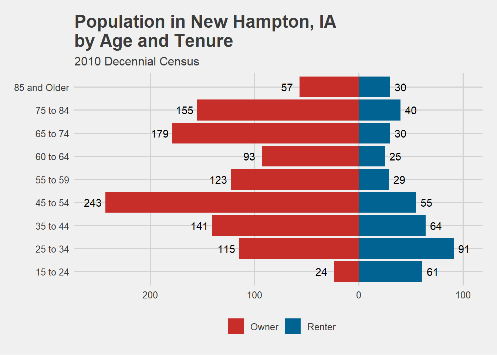
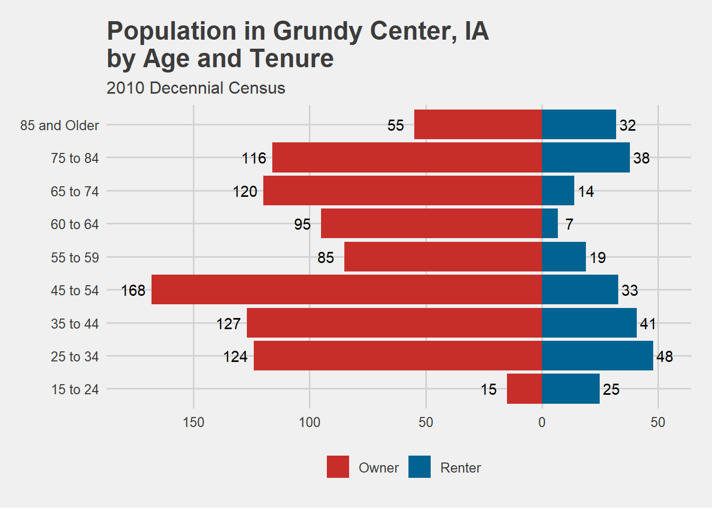
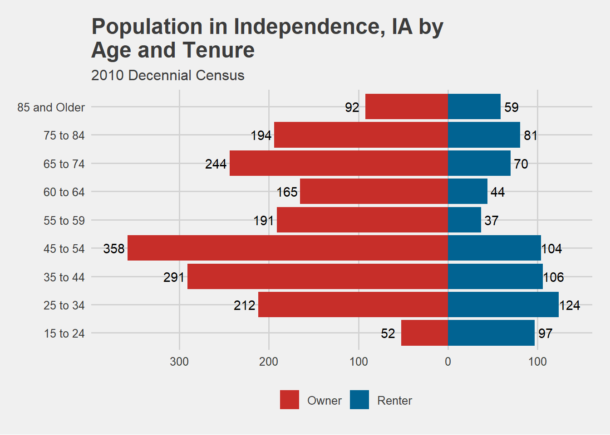
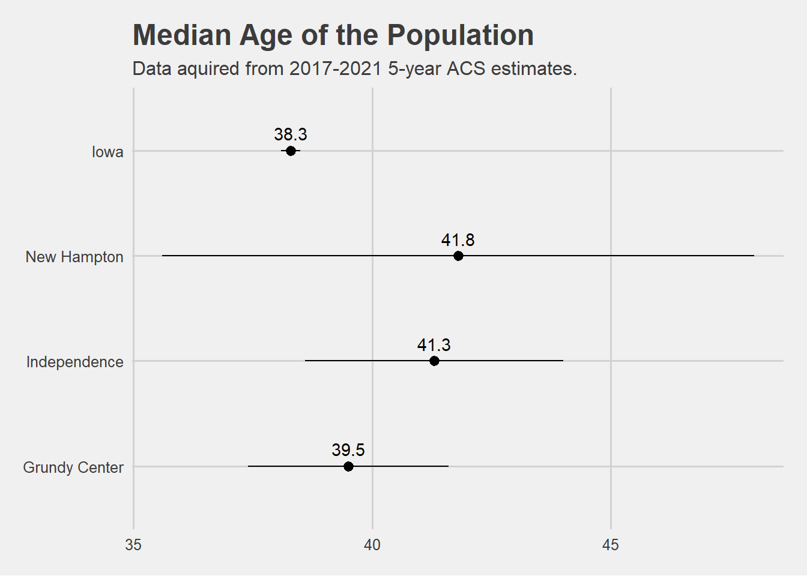
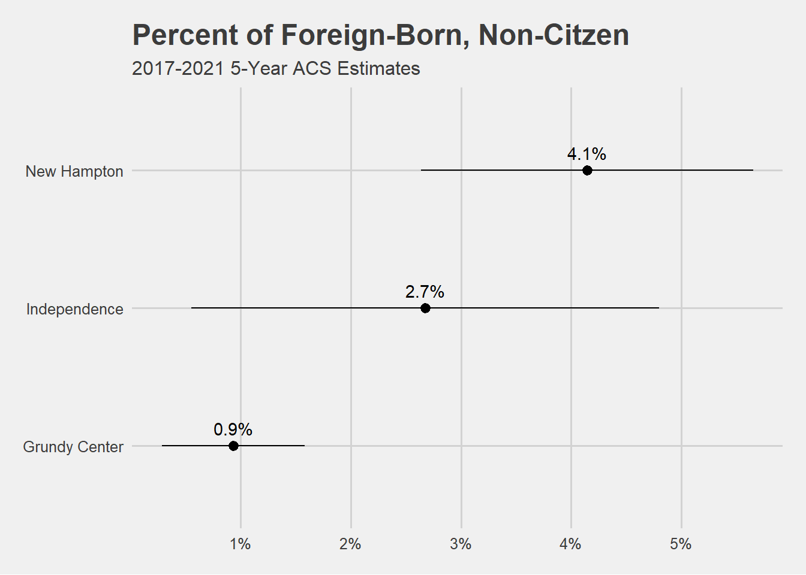
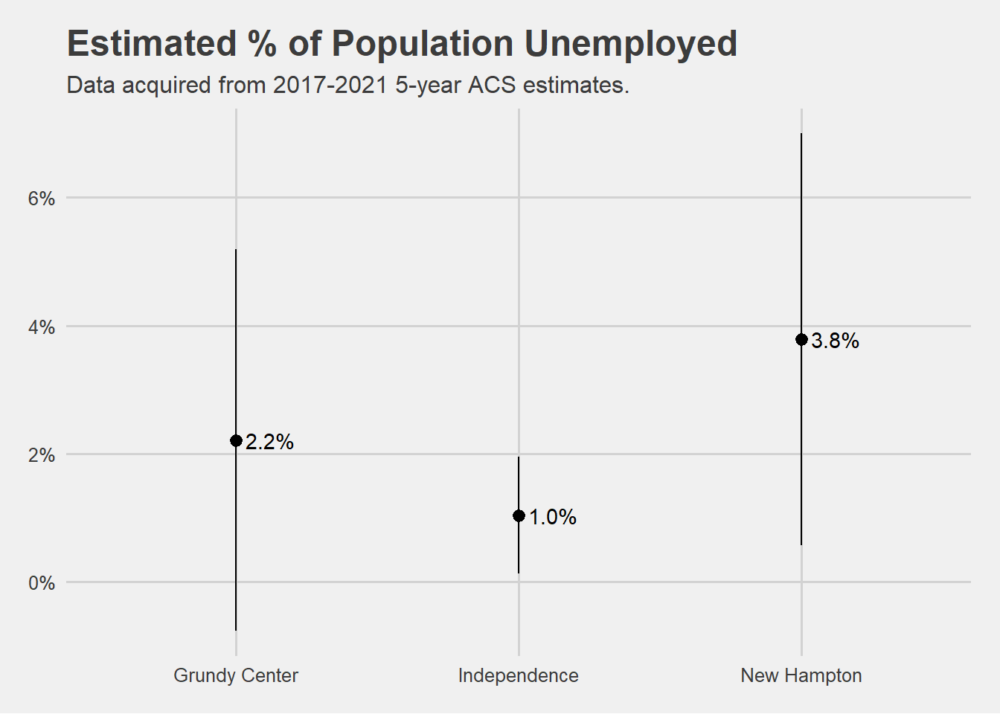

This week we were introduced to the TidyCensus package via the 2023 webinar series Analyzing 2017-2021 ACS Data in R and Python by Kyle Walker, Associate Professor at Texas Christian University and R developer.
We watched the first two videos in the webinar series: Working with the 2021 American Community Survey with R and Tidycensus and Mapping and spatial analysis with ACS data in R.
I created the following plots using the information I learned from the webinars and previous knowledge:
library(tidycensus)library(tidyverse)
Warning: package 'tidyverse' was built under R version 4.1.3
Warning: package 'ggplot2' was built under R version 4.1.3
Warning: package 'tibble' was built under R version 4.1.3
Warning: package 'tidyr' was built under R version 4.1.3
Warning: package 'readr' was built under R version 4.1.3
Warning: package 'purrr' was built under R version 4.1.3
Warning: package 'dplyr' was built under R version 4.1.3
Warning: package 'stringr' was built under R version 4.1.3
Warning: package 'forcats' was built under R version 4.1.3
Warning: package 'lubridate' was built under R version 4.1.3
-- Attaching core tidyverse packages ------------------------ tidyverse 2.0.0 --
v dplyr 1.1.2 v readr 2.1.4
v forcats 1.0.0 v stringr 1.5.0
v ggplot2 3.4.2 v tibble 3.2.1
v lubridate 1.9.2 v tidyr 1.3.0
v purrr 1.0.1
-- Conflicts ------------------------------------------ tidyverse_conflicts() --
x dplyr::filter() masks stats::filter()
x dplyr::lag() masks stats::lag()
i Use the conflicted package (<http://conflicted.r-lib.org/>) to force all conflicts to become errors
library(ggthemes)library(scales)
Warning: package 'scales' was built under R version 4.1.3
Attaching package: 'scales'
The following object is masked from 'package:purrr':
discard
The following object is masked from 'package:readr':
col_factor
Getting data from the 2010 decennial Census
Using Census Summary File 1
## Getting data from the 2010 decennial Census## Using Census Summary File 1iowa <- rent_iowa %>%bind_rows(own_iowa)%>%pivot_longer(-c(NAME, GEOID, tenure),names_to ="agegroups",values_to ="count")###plots for grundy, independence and new hampton for age break downs by housing tenureiowa %>%filter(NAME =="New Hampton city, Iowa") %>%mutate(agegroups =fct_relevel(agegroups, c("fifteentotwentyfour", "twentyfivetothirtyfour","thirtyfivetofourtyfour","fourtyfivetofiftyfour","fiftyfivetofiftynine","sixtytosixtyfour","sixtyfivetoseventyfour","seventyfivetoeightyfour","overeightyfive"))) %>%ggplot(aes(x = agegroups, y =if_else(tenure =="Renter", count, -count))) +geom_bar(aes(fill = tenure), stat ="identity") +geom_text(aes(x = agegroups, y =if_else(tenure =="Renter", count +10, -count -12), label = scales::comma(count))) +coord_flip()+scale_x_discrete(labels =c("15 to 24", "25 to 34", "35 to 44", "45 to 54", "55 to 59", "60 to 64", "65 to 74", "75 to 84", "85 and Older")) +scale_y_continuous(label = abs)+labs(x ="",y ="Population",fill ="",title ="Population in New Hampton, IA \nby Age and Tenure",subtitle ="2010 Decennial Census") +theme_fivethirtyeight()+theme(legend.position ="bottom") +scale_fill_wsj()

iowa %>%filter(NAME =="Grundy Center city, Iowa") %>%mutate(agegroups =fct_relevel(agegroups, c("fifteentotwentyfour", "twentyfivetothirtyfour","thirtyfivetofourtyfour","fourtyfivetofiftyfour","fiftyfivetofiftynine","sixtytosixtyfour","sixtyfivetoseventyfour","seventyfivetoeightyfour","overeightyfive"))) %>%ggplot(aes(x = agegroups, y =if_else(tenure =="Renter", count, -count))) +geom_bar(aes(fill = tenure), stat ="identity") +geom_text(aes(x = agegroups, y =if_else(tenure =="Renter", count +5, -count -8), label = scales::comma(count))) +coord_flip()+scale_x_discrete(labels =c("15 to 24", "25 to 34", "35 to 44", "45 to 54", "55 to 59", "60 to 64", "65 to 74", "75 to 84", "85 and Older")) +scale_y_continuous(label = abs)+labs(x ="",y ="Population",fill ="",title ="Population in Grundy Center, IA \nby Age and Tenure",subtitle ="2010 Decennial Census") +theme_fivethirtyeight()+theme(legend.position ="bottom") +scale_fill_wsj()

iowa %>%filter(NAME =="Independence city, Iowa") %>%mutate(agegroups =fct_relevel(agegroups, c("fifteentotwentyfour", "twentyfivetothirtyfour","thirtyfivetofourtyfour","fourtyfivetofiftyfour","fiftyfivetofiftynine","sixtytosixtyfour","sixtyfivetoseventyfour","seventyfivetoeightyfour","overeightyfive"))) %>%ggplot(aes(x = agegroups, y =if_else(tenure =="Renter", count, -count))) +geom_bar(aes(fill = tenure), stat ="identity") +geom_text(aes(x = agegroups, y =if_else(tenure =="Renter", count +12, -count -15), label = scales::comma(count))) +coord_flip()+scale_x_discrete(labels =c("15 to 24", "25 to 34", "35 to 44", "45 to 54", "55 to 59", "60 to 64", "65 to 74", "75 to 84", "85 and Older")) +scale_y_continuous(label = abs)+labs(x ="",y ="Population",fill ="",title ="Population in Independence, IA by \nAge and Tenure",subtitle ="2010 Decennial Census") +theme_fivethirtyeight()+theme(legend.position ="bottom") +scale_fill_wsj()

##MEDIAN AGEmedage <-c("medage"="B01002_001")grundy <-get_acs(geography ="place",state ="IA",variable = medage,year =2021,output ="tidy") %>%filter(NAME =="Grundy Center city, Iowa") %>%mutate(year =2021)
Getting data from the 2017-2021 5-year ACS
## Getting data from the 2016-2020 5-year ACSinde <-get_acs(geography ="place",state ="IA",variable = medage,year =2021,output ="tidy") %>%filter(NAME =="Independence city, Iowa") %>%mutate(year =2021)
Getting data from the 2017-2021 5-year ACS
new <-get_acs(geography ="place",state ="IA",variable = medage,year =2021,output ="tidy") %>%filter(NAME =="New Hampton city, Iowa") %>%mutate(year =2021)
Getting data from the 2017-2021 5-year ACS
## Getting data from the 2016-2020 5-year ACSia <-get_acs(geography ="state",state ="IA",variable = medage,year =2021,output ="tidy") %>%mutate(year =2021)
Getting data from the 2017-2021 5-year ACS
## Getting data from the 2016-2020 5-year ACSmedage16_20 <- grundy %>%bind_rows(ia,inde, new) %>%mutate(upper = estimate + moe,lower = estimate - moe)medage16_20 %>%ggplot() +geom_pointrange(aes(x = NAME, y = estimate, ymin = lower, ymax = upper))+geom_line(aes(x = NAME, y = estimate))+coord_flip()+geom_text(aes(x = NAME, y = estimate, label = estimate), hjust = .5, vjust =-.8)+scale_x_discrete(limits =c("Grundy Center city, Iowa", "Independence city, Iowa", "New Hampton city, Iowa", "Iowa"),labels =c("Grundy Center","Independence","New Hampton","Iowa"))+labs(title ="Median Age of the Population",subtitle ="Data aquired from 2017-2021 5-year ACS estimates.",x ="",y =" ",)+theme_fivethirtyeight()
`geom_line()`: Each group consists of only one observation.
i Do you need to adjust the group aesthetic?

#PERCENT FOREIGN BORN, NON-CITIZENSforeign <-c("foreign"="B05012_003","pop"="B05012_001")foreign <-get_acs(geography ="place",state ="IA",year =2021,variable = foreign,output ="wide") %>%filter(NAME %in%c("Grundy Center city, Iowa", "Independence city, Iowa", "New Hampton city, Iowa"))
Getting data from the 2017-2021 5-year ACS
## Getting data from the 2017-2021 5-year ACSforeign <- foreign %>%mutate(pct_foreign = foreignE/popE,pct_foreign_moe =moe_prop(foreignE, popE, foreignM, popM))foreign %>%ggplot() +geom_pointrange(aes(x = NAME, y = pct_foreign, ymin = pct_foreign - pct_foreign_moe, ymax = pct_foreign + pct_foreign_moe ))+coord_flip() +scale_y_continuous(label = scales::percent) +theme_fivethirtyeight() +labs( x =" ",y ="Pct Foreign",title ="Percent of Foreign-Born, Non-Citzen",subtitle ="2017-2021 5-Year ACS Estimates")+scale_x_discrete(labels =c("Grundy Center", "Independence", "New Hampton"))+geom_text(aes(x = NAME, y = pct_foreign, label =percent(pct_foreign)), hjust = .5, vjust =-.8)

##MEDIAN INCOME BY HOUSEHOLDgrundy_acs <-get_acs(state ="IA", geography ="place",year =2021,variable =c(med_house ="B19013_001"),output ="tidy") %>%filter(NAME =="Grundy Center city, Iowa")
## Getting data from the 2016-2020 5-year ACSpct_un <- grundy_un %>%bind_rows(inde_un,new_un)pct_un %>%ggplot(aes(x = NAME, y = pct))+geom_pointrange(aes(ymin = pct - moe, ymax = pct +moe))+geom_text(aes(label = scales::percent(pct)), hjust =-.2)+scale_y_continuous(label = scales::percent)+scale_x_discrete(labels =c("Grundy Center", "Independence", "New Hampton"))+labs(y ="",x ="",title ="Estimated % of Population Unemployed",subtitle ="Data acquired from 2017-2021 5-year ACS estimates.")+theme_fivethirtyeight()

I wish I would’ve gotten to dig deeper into TidyCensus this week, but I was on vacation in Vegas. I learned a lot about TidyCensus considering though.
We also had our first client meeting for the Housing and AI project this week on Thursday, May 25th. We gained clarity for which direction we should be heading in the project from our stakeholders.